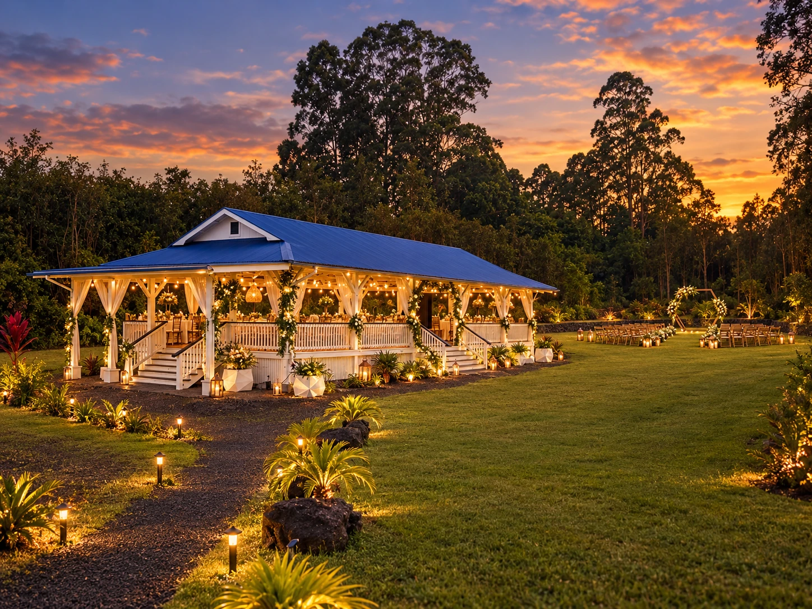
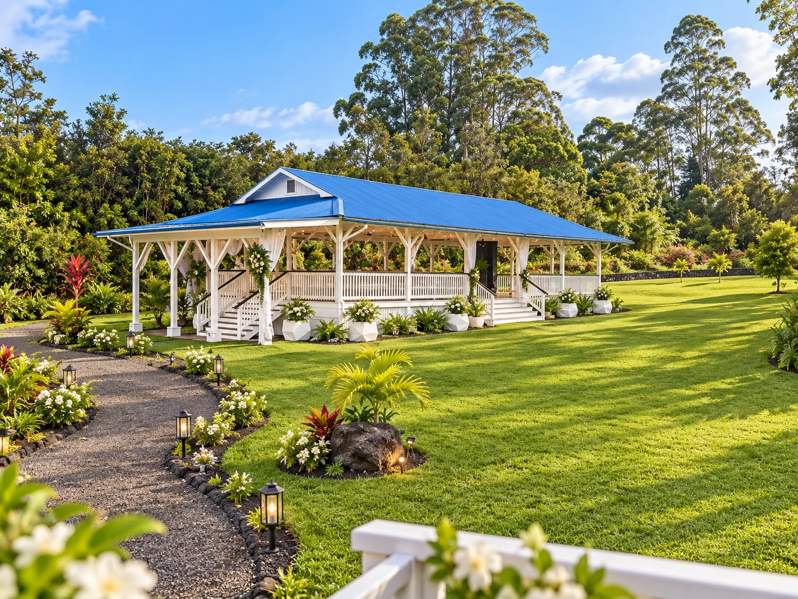
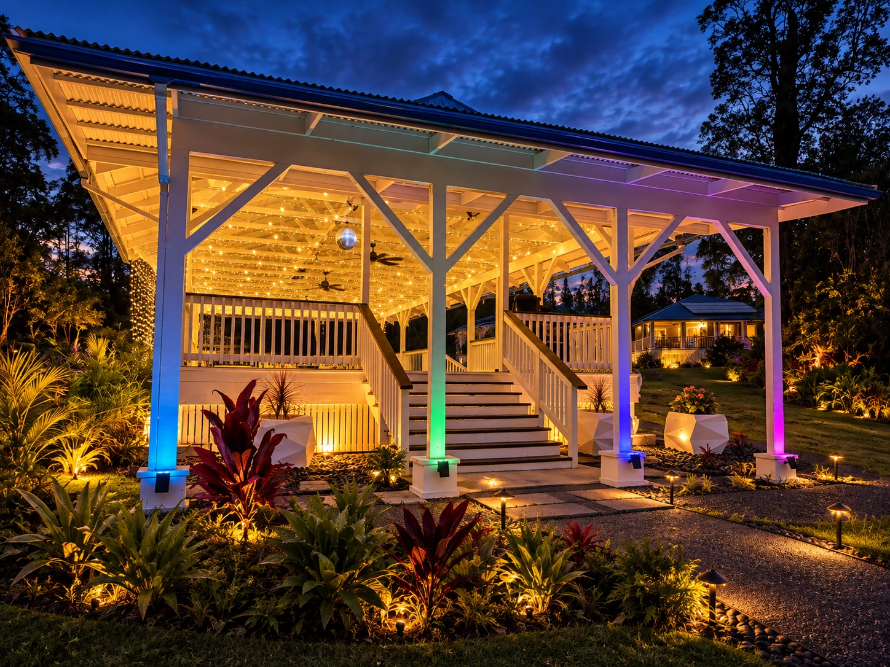
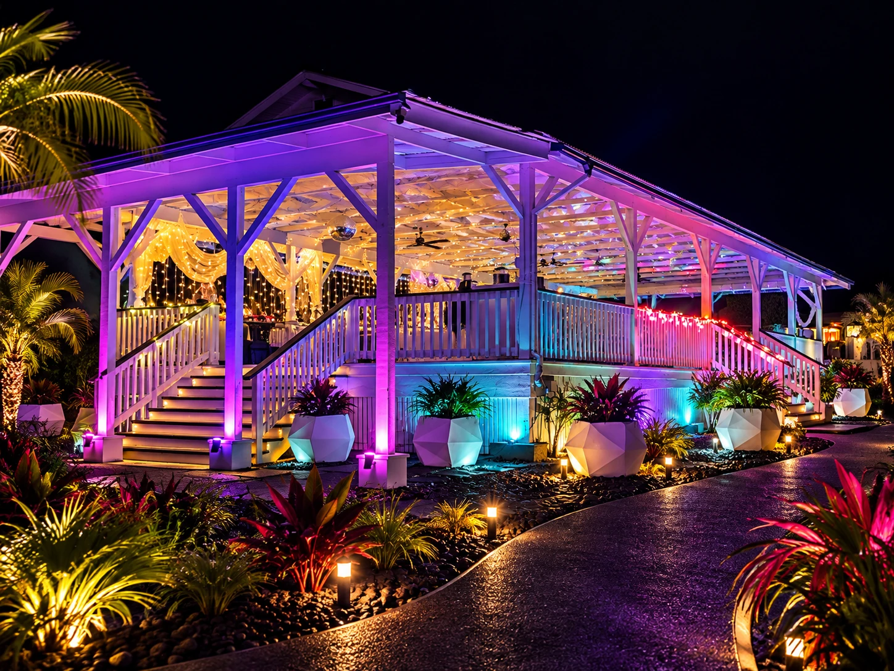
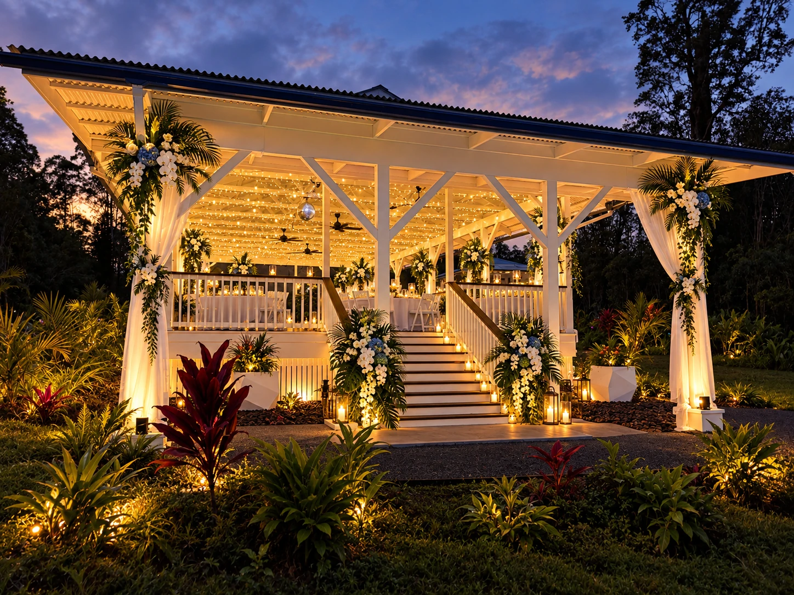

How large does it feel?
Wide views and long sightlines help teams understand usable scale.

Property + Production Gallery
A producer-focused look at the Wild Ones / Koa’s Events property across daylight, twilight, event lighting and nighttime operation.






What producers need to see
Wild Ones imagery is selected for scale, infrastructure, access, atmosphere and production potential rather than wedding décor or small-social styling.
Wide views and long sightlines help teams understand usable scale.
Approach, gates, roads and staging areas matter to load-in planning.
Lighting and nighttime context show how the venue changes after sunset.
Backstage, bars, restrooms and support zones complete the event footprint.